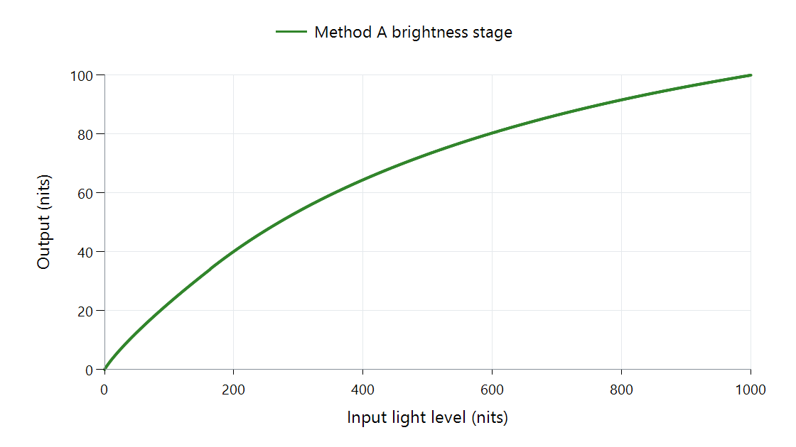

Tone Mapping Curve: BT.2446 Method A
Method A is one of the HDR/SDR conversion methods described in ITU-R Report BT.2446. It is a conversion recipe, rather than a codec or a piece of HDR metadata carried by the film.
The report's complete method includes color processing as well as brightness adaptation. A renderer option named BT.2446A may expose its brightness function inside the renderer's own wider pipeline.

libplacebo 7.360.1's Method A brightness function, 1,000 → 100 nits, zero black levels. The plot does not represent the method's complete color processing.
What the curve shows
The calculation passes through a logarithmic representation and a piecewise mapping before producing output light levels. The slope changes across the range rather than applying one constant scale factor.
For the plotted example, an input of 100 nits becomes about 23 nits, while 500 nits becomes about 73 nits. Those values describe this configured function. They are not promises about the brightness of an Emby screen: later signal encoding, display behavior, and the chosen target still matter.
| Name encountered | What it tells you |
|---|---|
| BT.2446 | The report containing several conversion methods |
| Method A | One particular method in that report |
| A renderer's BT.2446A option | An implementation that must be understood in its pipeline context |
This distinction helps when reading tone-mapping comparisons. A screenshot made using a full conversion recipe and one made using only its brightness stage need not match, even when both descriptions say Method A.
When interpreting an Emby result, consider gamut mapping alongside the curve. Color handling can change the appearance of bright saturated objects without changing this one-dimensional graph.